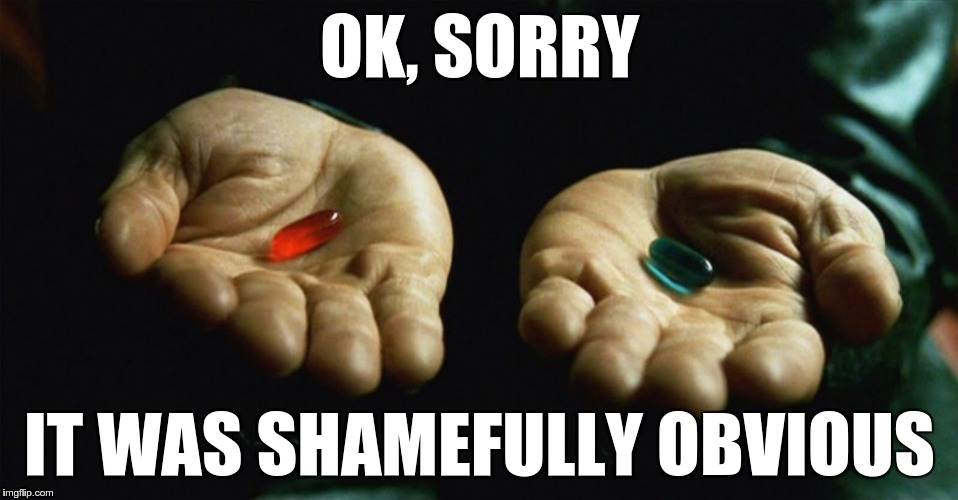

The World Should Be Computable
For VilniusRB, Feb 2017
Victor Shepelev (zverok)
* Including outdated memes, random photos and overuse of emojis
whoami
- Victor Shepelev, 34 yrs, Kharkiv, Ukraine;
- 15+ years of development experience (all my life, to be honest);
- Ruby developer, Ruby mentor, Ruby enthusiast;
- (also poet).
I want to talk about reality

gem install reality
Reality is like…
1 2 3 4 5 6 7 8 9 10 |
v = Entity('Vilnius') v.area # => #<Reality::Measure(401 km²)> v.area / v.country.area # => 0.006 v.coord.distance_to(Entity('Kharkiv')) # => #<Reality::Measure(907 km)> v.coord.weather # => #<Reality::Weather(-10°C, Clouds)> |
— So, is it some kind of geoinformation API?..
— Nope.
Also, reality is like…
1 2 3 4 5 6 7 8 9 10 11 12 13 |
ruby = Entity('Ruby (programming language)') ruby.developers.first # => #<Reality::Entity?(Yukihiro Matsumoto)> ruby.developers.first.age_at(ruby.created_at) # => 29 Entity('Chewbacca').describe # affiliations: #<Reality::List[Galactic Republic?, Rebel Alliance?, New Republic (Star Wars)?]> # fictional_universe: "Star Wars Expanded Universe" # occupations: ["mechanic"] # portrayer: #<Reality::Entity?(Peter Mayhew)> # species: #<Reality::Entity?(Wookiee)> |
— So, is it some dataset?
— Not at all!
Then…

Inspirations: Wolfram Language

Inspirations: Wolfram Language

Now, back to reality!
Currenty (tree/master) it is
a table of contents,
loose, yet computable
to all “common sense” knowledge
through Wikipedia/Wikidata.
Now, back to reality!
Yet, by design (tree/develop), it is:
a table of contents for common sense knowledge,
enriched with data from other popular APIs,
and easily plugged in with other “real world” data.
In other words, reality is a foundation for all “real world” API and datasets integration.
Why it is important?
…Or, at least, interesting?
Because Common knowledge and Assisted intelligence.
E.g.: what human know
…and computer don’t
…yet can.
— Ticket booking system? — Should know source and destination climate, currencies, visa requirements etc.
— Small bookshop? — What about author biographies, their contemporaries, similar styles and probably historical periods?
— Next Personal ToDoList? — Unit conversions, timezones, weather, transportation…
TODO: more cool examples! ← Yep, left here consciously
The road to reality*
* Tired of pun pictures. Imagine it yourself.
Entire world is your (irregular) database
1. Tables of contents for common knowledge
2. Including specific facets of knowledge
3. Including local and rare data sources
Tables of contents (for common knowledge)
- Wikipedia: comprehensive, yet poorly structured;
- Wikidata: structured (small-ish) part of Wikipedia;
- OpenStreetMap: everything (?) about geography.
Tables of contents: Examples*
* Potential code here and below! Works sometimes on my local machine. Or not.
1 2 3 4 5 6 7 8 9 10 11 12 |
v = Reality.wikipedia.get('Vilnius') # => #<Reality::Entity wikipedia:Vilnius, wikidata:Q216?> v.water_bodies # => [#<Reality::Entity wikipedia:Neris, wikidata:Q207903>, # #<Reality::Entity wikipedia:Vilnia, wikidata:Q661684>] v.water_bodies.last.length # => #<Reality::Measure 79.6 km> v.country.load! # => #<Reality::Entity wikipedia:Lithuania, wikidata:Q37, openstreetmap:72596> v.country.waterways # => [#<Reality::Entity openstreetmap:2824450, wikidata:Q207903?, wikipedia:Neris?> .... |
Tables of contents: Challenges and solutions
Challenge: Wikipedia is the most powerful source yet poorly structured and hard to parse
Solution: Semantic Wikipedia parser, named Infoboxer, developed
Challenge: Wikidata is structured, yet has weird API and lot less information then Wikipedia (yet?)
Solutions: Use Wikidata+Wikipedia, query Wikidata with dedicated SPARQL inteface
Challenge: OpenStreetMap has all (?) the geodata, yet quirky search APIs
Solution: Yet to come!
Facets of knowledge
Query specific APIs and datasets for:
- Movies,
- Books,
- Historical periods,
- Restaurants,
- Earthquakes,
- ………..
Facets of knowledge: Examples*
* Still not a really working code. Sorry :(
1 2 3 4 5 6 7 8 9 10 11 |
vilnius.sightseeings # => from Wikivoyage # => [#<Reality::Entity wikivoyage:Gediminas Castle>, # #<Reality::Entity wikivoyage:Three Crosses Hill>, # #<Reality::Entity wikivoyage:Vilnius Cathedral> ... Reality.wikipedia.get('Alice in Wonderland').text # => from Project Guttenberg .tokenize.tap { |words| SomeFancyWordCloud.build(words) } Reality.wikipedia.get('Japan').earthquakes(magnitude_gte: 9) # => from USGS # => [#<Reality::Entity usgs:official20110311054624120_30>] |
Facets of knowledge: Challenges and solutions
Challenge: Each API has its own structure of response and request
Solution: Declarative API client description (TLAW)
Challenge: Amount and structure of data is irregular
Solution: Simple, powerful and homogenous structure: Observations
Demo of Observations
Before:
1 2 3 4 5 6 7 |
forecast = ForecastIO.forecast(37.8267, -122.423) # => Hashie with summary, hourly/daily/minutely - Hashies with summaries and data OpenWeather::Forecast.city("Cochin, IN") # => hash, f['list'] - array of hashes of hashes, date is number response = Weather.lookup(9830, Weather::Units::CELSIUS) # => Weather::Response == set of deeply nested objects, NOT hashes |
Demo of Observations
After:
1 2 3 4 5 6 7 8 9 |
w = vilnius.forecast_io # => #<Reality::Entity forecast_io:54.68,25.28> w.temperature # => -17°C -- it is a Reality::Observation w.temperature.at(Date.parse('2016-09-10')) # => 23°C w = vilnius.open_weather_map # => #<Reality::Entity open_weather_map:593116> w.temperature # => -16°C -- data differs, API is the same |
Local APIs
TBD
Offline datasets
TBD
And…

And beyond: necessary infrastructure
github.com/zverok/geo_coord:
github.com/molybdenum-99/tz_offset
And beyond: developing the approaches
- github.com/molybdenum-99/tlaw – declarative API wrapper;
- discoverability of “infinite” and irregular data systems;
- scientific simplicity and power of “observations”.
And beyond: fancy console
IRuby: wrapper on Jupyther/IPython “scientific console”

Join the reality!

Join the reality!
Links:
- github.com/molybdenum-99/reality is the main repo;
- github.com/molybdenum-99 is a small GitHub organization, trying to do the right thing™;
- reality-show.molybdenum.io is an (outdated, yet working) online demo;
- I am zverok (zverok.offline@gmail.com, zver_ok@Skype, gitter.im/zverok), feel free to contact me.
Necessary gratitudes:
- Serhiy Mostoviy is my dear colleague, who pushed and inspired me to release first version, and currently develops reality-show online demo;
- The Ruby Association who kindly provided me with grant for the first version; to be honest, the trust was more important than the money (spent them already, BTW);
- Vilnius Ruby Group for inviting me to talk about those impractical matters!